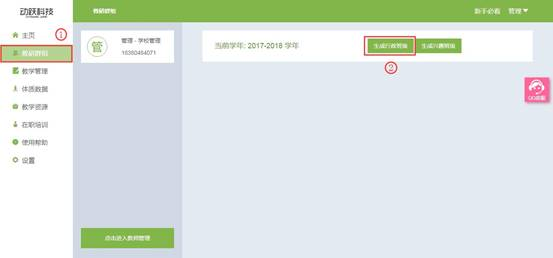
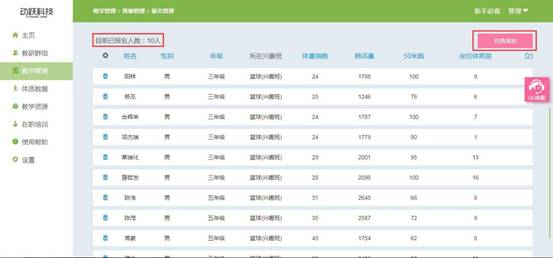

班级设置
班级是学校的基本单位，班级建立完成后，才能教学管理的操作。
行政班设置：
视频教程：
1. 登录动跃体育教学管理平台后，进入平台操作界面。
2. 点击进入教研群组 > 点击生成行政班级按钮，如下图:

3. 点击进入后，按要求填写信息，生成行政班级，填写要求如下：
>选择年级：根据学校的年级选择，由小学一年级至高中三年级。
>输入班级数目：根据年级的班级数目填写，填写几个班级就会生成几个班级。
4. 点击确定按钮 , 提交设置学年起止时间信息，即保存成功。
兴趣班设置：
视频教程：
兴趣班可以对教学班，合班分项，兴趣班进行管理。
1. 登录动跃体育教学管理平台后，进入平台操作界面。
2. 点击进入教研群组 > 点击生成兴趣班级按钮，如下图:
3. 点击进入后，按要求填写信息，生成行政班级，填写要求如下：
>选择学年：选择已设置完成的学年。
>选择分类：根据体育项目分类选择，如田径、球类等。
>选择子类：根据选择的项目分类，选择该项目分类下的具体项目内容。
>输入兴趣班名称：根据项目选择，如篮球、足球、羽毛球等项目。
4. 点击确定按钮 , 兴趣班创建成功。
分配教师
视频教程：
为班级分配老师后，老师才能对该班教学管理进行操作设置。
1. 登录动跃体育教学管理平台后，进入平台操作界面。
2. 点击进入教研群组 > 点击 (一年级1班) 按钮，如下图:
3. 弹出窗口分配班级负责老师，请按要求选择，如下：
>选择负责老师：按照学校课程安排分配负责老师。
4.选择班级负责老师 , 点击确定后，即分配成功，成功后，页面显示班级为黄色，行政班及兴趣班均按此方法分配教师。
兴趣班报名管理
视频教程：
学生结合自己的兴趣和能力选择适合的课程，跨班级、跨年级上课。
注：兴趣班选择前提条件
>
生成兴趣班并成功
分配老师。
>
上传学生数据。
1. 登录动跃体育教学管理平台后，进入平台操作界面。
2. 点击进入教学管理 > 点击报名管理，如下图:
3. 点击进入报名管理后，选择其中需要进行报名的兴趣班班级，可选同一年级的兴趣班，也可选择垮年级的兴趣班。
4. 进入篮球(兴趣班)报名管理 , 请按要求填写并选择。
>报名时间：教师选择一个时间段，在此时间段内，学生可以报名兴趣班。
>报名名额：一个兴趣班的总人数，教师根据学生人数、场地需求等实际情况确定。
>报名要求：教师根据自己需求，选择成绩范围中的学生，也可不做要求。
>报名年级：根据学生报名的实际年级，可全选所有年级。
5. 点击确定按钮提交报名信息，弹出窗口，点击确定，即保存成功。
6. 点击自选添加按钮，弹出窗口，按要求选择，点击确定，进入自选添加报名学生。
7. 勾选添加学生，一个班级有多个学生，按照学生兴趣报名选择，可全选、多选和单选，页面右上方可看见选择了多少人，点击确认按钮提交，即学生报名成功。
8. 报名成功后，报名管理页面显示已报名人数和详细信息，还可点击右上角的自选添加按钮继续添加兴趣班人员。
